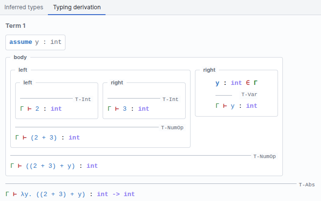
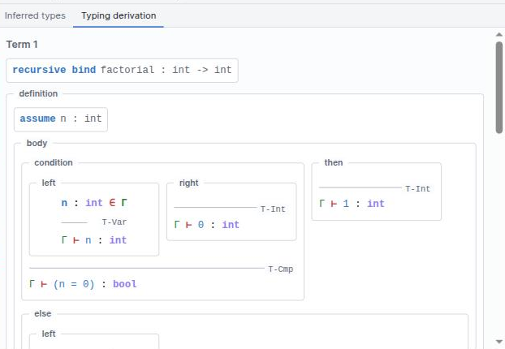

Types you never write down
B-Lambda has no type annotations at all. Every type you see was inferred from the structure of the term — and the Typing derivation tab will show you the proof, rule by rule, for any program you build.
The type vocabulary
Deliberately tiny. Four things:
| Type | Written | Comes from |
|---|---|---|
| Integer | int |
number literals, arithmetic |
| Boolean | bool |
boolean literals, comparison, connectives |
| Type variable | 'a, 'b, … |
an unconstrained parameter |
| Function | 'a -> 'b |
abstraction |
Function types associate to the right, as usual: a two-parameter curried function has type
int -> int -> int, which is int -> (int -> int).
How inference runs
Inference is Hindley-Milner. It re-runs on every workspace change and on every code refresh, and it is scheduled incrementally so that editing a large program stays responsive.
- A λ parameter starts as a fresh type variable, and gets refined by how the body uses it.
- An abstraction gets a function type from its parameter and body.
- An application unifies the function's argument type with the actual argument, and takes the function's result type.
- Literals, operators, comparison and conditionals contribute the
int/boolconstraints from the table in Blocks. - A
letgeneralises its binding into a type scheme — see below. - A
letrecis inferred monomorphically.
The results surface in four places: the Inferred types tab, the type comment on each block, a type comment in the generated code, and warning bubbles on any block that does not check.
Let-polymorphism
This is the one place where the type system does something you might not expect from the term alone.
A let-bound value is generalised: its type variables are quantified, so
each use of the name can instantiate them differently.
let id = λx. x in
if (id True) then (id 42) else 0Here id is used at bool -> bool and at int -> int in the
same expression. Without generalisation the two uses would be forced to agree and the program would
not type-check. The Let-Polymorphism example loads exactly this shape.
λx. x alone infers 'a -> 'a. The type variable is not a
placeholder for something inference failed to work out — it is the answer. Nothing in the
term constrains x, so the function genuinely works at every type.
The typing derivation
Types → Typing derivation renders the proof as nested premises-over-a-bar trees, the way a paper would print them. Each box is a sub-derivation; the label at the right of each bar is the rule that was applied.

λy. ((2 + 3) + y). Read bottom-up:
T-Int on the literals, T-Var on y, T-NumOp on
each addition, and T-Abs concluding int -> int.For a recursive program the derivation opens with the binding's own judgement, so you can see the type
letrec committed to before it started checking the body:

recursive bind factorial : int -> int — the monomorphic type assumed for
the recursive call — and each branch is derived beneath it.The corresponding Inferred types tab is the summary view: one line per top-level term with its type, plus a Selected block pane that reports the term, type and status of whichever block you have clicked.
Rule names
The rules you will see on the bars, and what each one concludes:
| Rule | Concludes |
|---|---|
T-Var |
A variable's type, by looking it up in the context: x : τ ∈
Γ |
T-Int |
A number literal is int |
T-Bool |
A boolean literal is bool |
T-Abs |
An abstraction is a function type |
T-App |
An application, after unifying argument with parameter |
T-NumOp |
Arithmetic: two ints give an int |
T-Cmp |
Comparison: two ints give a bool |
The judgement form is the standard one, Γ ⊢ term : type, with the context
shown as Γ and additions to it written as assume x : τ at the top
of the box that introduces them.
B-MJ uses the same T-* prefix for expression rules and adds WF-* rules
for statements — see B-MJ's types chapter. MnL
uses a richer judgement, Γ ⊢ term : Category ⊗ Type, because
there the block's grammatical category is part of what is being checked.
When it goes wrong
Two kinds of thing can be wrong: a term can be incomplete (an empty socket), or it can be ill-typed. Both are reported the same three ways.
- A warning bubble on the block. Blockly's own warning icon, on the specific block that failed — not on its parent.
- The Problems tab in the bottom panel, which lists every diagnostic. When there is nothing to report it says No problems detected. Type inference is current. — the second sentence matters, because it tells you the empty list is up to date rather than stale.
- The status bar count, so you can see there is a problem without opening the panel.
An incomplete term is not treated as an error to be shouted about — a term you are halfway through building is expected. Inference gives what it can and reports the missing input, which is why the count usually drops to zero on its own as you finish connecting blocks.